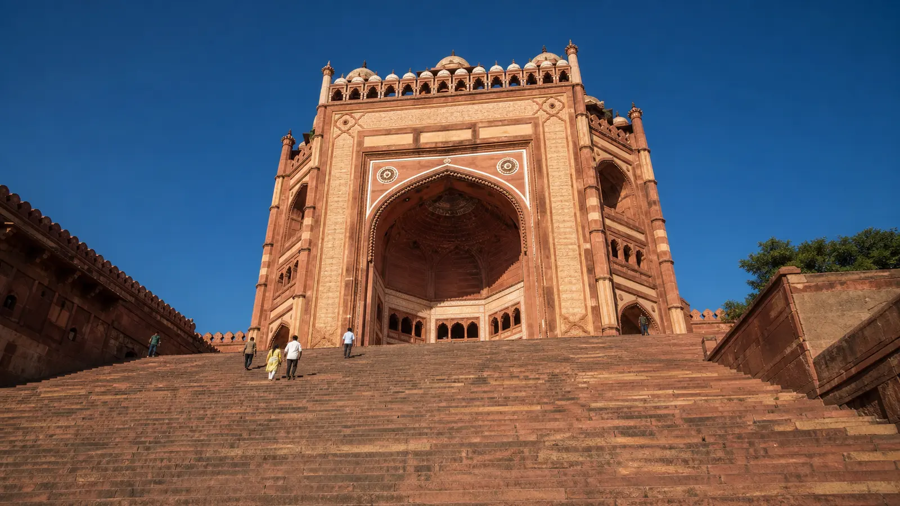

Without Worrying About
Transport.
Private AC Cab From Agra
From ₹2,500
Visit Akbar’s historic UNESCO city with a private cab, flexible pickup and a driver who waits while you explore.

Get picked up from your hotel, railway station, airport or address in Agra and travel comfortably to Fatehpur Sikri in a private AC cab.
Your driver waits while you explore, then brings you back to Agra.
Trusted Agra Taxi Service For Local Sightseeing
Hotels in Agra
Agra Cantt Railway Station
Agra Fort Railway Station
Agra Airport (Kheria)
Any Agra City Address
Private pickup, comfortable travel, enough time to explore and a driver waiting when you’re ready to return.
₹2,500
AC Sedan (Dzire / Amaze) — 4 seats — Full Day
Fare on WhatsApp
AC SUV (Ertiga) — 6 seats — Full Day
Fare on WhatsApp
AC SUV (Innova Crysta) — 7 seats — Full Day
Fare includes fuel and driver charges for the day. Monument entry tickets, tolls and parking are paid by the customer at actuals — no hidden fees.
Your cab picks you up from your hotel, railway station, airport or chosen address in Agra.
Relax in an AC cab for the approximately one-hour drive from Agra via NH-19.
Visit Buland Darwaza, Panch Mahal, Jama Masjid, Salim Chishti’s Tomb and the surrounding historic complex.
No need to find another cab after sightseeing — your driver waits while you explore.
Leave in the morning or afternoon depending on your Agra itinerary.
Meet your driver after sightseeing and travel comfortably back to your pickup area in Agra.
Ask about combining this trip with the Taj Mahal, Agra Fort, a full Agra sightseeing day, or a stop en route to Jaipur — WhatsApp us for a custom fare.
No app to download and no advance payment for most bookings.
Local Taxi Service — Agra
Local Pickup • Clear Pricing • Direct Support
Approximately 40 km via NH-19. The drive takes about 1 hour each way in a private taxi.
₹2,500 for an AC sedan, full day, including fuel and driver. Tickets, tolls and parking are separate.
About 1 hour each way via NH-19 — roughly 2 hours of driving across the full round trip.
Most visitors need 2–3 hours to see Buland Darwaza, Panch Mahal, Jama Masjid and Salim Chishti’s Tomb.
Yes. Your driver waits at the complex for the duration of your booked day at no extra charge.
No. Entry tickets are paid at the gate; tolls and parking are also paid by you at actuals — not part of the cab fare.
Yes — easy to combine with a full Agra sightseeing day. Message us on WhatsApp for a custom itinerary.
Yes, we pick up from any address in Agra including Agra Cantt, Agra Fort station and Kheria Airport.
Yes — it sits right on the Agra–Jaipur highway, so it’s an easy stop on that route.
No advance is needed for most bookings. Fare is confirmed on WhatsApp before pickup.
More Routes From Agra
Book Your Private Cab From Agra Today.
Tell us your pickup location and preferred travel time. We’ll confirm your cab and fare directly on WhatsApp.